스포츠경영관리사 (2019-03-03 기출문제)
1과목: 스포츠 산업론
1. 프로스포츠 리그에 영향을 미치는 위협요인에 관한 설명으로 틀린 것은?
- 영화산업의 발전은 관람스포츠산업의 강력한 위협요인이 된다.
- 스포츠콘텐츠 유통업체가 소수기업에 의해 지배될 경우 위협요인이 될 수 있다.
- 리그내의 경쟁구단의 존재는 흥행사업의 강력한 위협요인으로 작용한다.
- 스포츠마케팅 대상인 구매자의 힘이 위협요인으로 작용할 수 있다.
(정답률: 70%)

2. 선수시장에서 프로선수의 몸값에 영향을 미치는 요인을 모두 고른 것은?
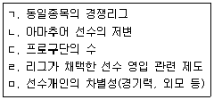
- ㄱ, ㄴ, ㄷ
- ㄴ, ㄹ, ㅁ
- ㄱ, ㄷ, ㄹ, ㅁ
- ㄱ, ㄴ, ㄷ, ㄹ, ㅁ
(정답률: 71%)
3. 다음 중 국내 스포츠산업 발전과 가장 거리가 먼 것은?
- 프로스포츠의 발전
- 스포츠시설 확대
- 유동자산의 증가
- 국내외 스포츠이벤트의 성공적 개최
(정답률: 83%)
4. 다음 전력은 스포츠제품의 어떤 서비스적 특성을 반영한 것인가?
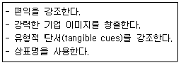
- 무형성
- 비분리성
- 이질성
- 소멸성
(정답률: 62%)
5. 골프연습장의 수요와 공급곡선이 다음과 같을 때의 설명으로 틀린 것은? (단, 가격의 단위는 천원이다.)
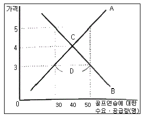
- A는 골프연습장의 공급곡선이다.
- B는 골프연습장 소비자의 수요곡선이다.
- C는 수요곡선과 공급곡선이 만나는 균형점이며 균형가격은 4000원이다.
- D는 초과공급을 나타내며 시간이 지남에 따라 가격은 균형가격 아래로 하락할 것을 알 수 있다.
(정답률: 73%)
6. 국민체육진흥법상 학교ㆍ직장ㆍ지역사회 또는 체육단체 등에서 체육을 지도할 수 있는 체육지도자가 취득해야 하는 자격이 아닌 것은?
- 스포츠지도사
- 건강운동관리사
- 스포츠경영관리사
- 유소년스포츠지도사
(정답률: 78%)
7. 스포츠상품에 대한 설명으로 틀린 것은?
- 스포츠상품은 여러 가격변수들이 구성되는 경우가 많아 스포츠 수요를 제대로 분석하기 어려운 경우가 발생한다.
- 테니스라켓과 테니스공은 보완재이다.
- 한 상품의 가격변화가 다른 상품의 수요에 영향을 미치지 않을 때 두 상품을 대체재의 관계에 있다.
- 소비자의 소득수준이 변하더라도 수요량이 변하지 않는 재화를 중립재라고 한다.
(정답률: 57%)
8. 다음 중 스포츠를 이용한 확장 상품의 형태라고 볼 수 없는 것은?
- 대한축구협회 스폰서십 프로그램
- FC서울-맨유의 입장권 판매
- MLB 라이센싱 상품
- 나이키의 에어조던
(정답률: 70%)
9. 스포츠제품에 대한 소비자의 관여도가 높은 수준으로 발생하는 경우와 가장 거리가 먼 것은?
- 지각된 위험이 낮을 때
- 감성적으로 끌리는 제품일 때
- 지속적으로 관심을 갖는 제품일 때
- 제품이 자신의 자아개념과 관련이 있을 때
(정답률: 62%)
10. 다음 휴대폰과 축구경기를 생산하는 과정을 비교하는 표에서 틀리게 분류한 것은?
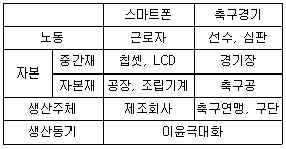
- 노동
- 자본
- 생산주체
- 생산동기
(정답률: 73%)
11. 스포츠제품의 유통과정에서 중간상의 역할과 가장 거리가 먼 것은?
- 정보탐색비용 등 거래비용을 줄이는 역할을 한다.
- 생산자에게 적정 이윤을 보장하는 역할을 한다.
- 생산자와 소비자 사이의 접촉횟수를 줄이는 역할을 한다.
- 생산자와 소비자 사이의 교환과정을 촉진하는 역할을 한다.
(정답률: 53%)
12. 스포츠산업 진흥법령상 사업자단체의 설립인가 요건 중 다음 ()에 알맞은 것은?
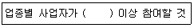
- 100분의 70
- 100분의 50
- 100분의 30
- 100분의 10
(정답률: 56%)
13. 스포츠용품 유통 경로 중 프랜차이징 시스템을 이용하는 프랜차이즈 가맹점에 대한 설명으로 틀린 것은?
- 가맹점은 다른 가맹점을 통제할 수 있다.
- 가맹점 운영과 관련하여 본부의 통제를 받아야 한다.
- 가맹점은 프랜차이즈 본부의 유명세로 광고ㆍ마케팅 비용을 절감할 수 있다.
- 가맹점은 프랜차이즈 본부에 로열티 및 각종 비용을 지불하고 본부가 가지고 있는 특권을 이용한다.
(정답률: 80%)
14. 기업이 스포츠이벤트의 스폰서십에 투자하는 이유 및 이벤트 선정과정에 관한 설명으로 틀린 것은?
- 기업이 스포츠 스폰서십에 투자하는 가장 중요한 이유는 매출증대에 있다.
- 투자기업 중에는 이미지개선을 목적으로 하는 기업도 있다.
- 스포츠이벤트의 미디어노출빈도는 중시하지만 제품과 종목의 이미지 부합여부는 무관하다.
- 스포츠이벤트가 보유한 팬 집단과 기업이 표적으로 삼는 집단의 일치여부가 중요하다.
(정답률: 76%)
15. 소비자로서 스포츠시장에 참여할 수 있는 방법과 가장 거리가 먼 것은?
- 직접 스포츠에 참여하는 방법
- 경기장에 가서 스포츠를 관람하는 방법
- 스포츠 이벤트를 텔레비전이나 라디오 등의 매체를 통해 접하는 방법
- 스포츠용품회사를 직접 설립하는 방법
(정답률: 77%)
16. 스포츠 수요를 결정하는 요인을 모두 고른 것은?
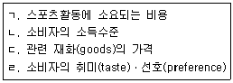
- ㄱ, ㄴ, ㄷ
- ㄱ, ㄴ, ㄹ
- ㄷ, ㄹ
- ㄱ, ㄴ, ㄷ, ㄹ
(정답률: 77%)
17. 스포츠시장에서 거래되는 X재에 대해 시장균형가격보다 낮은 수준에서 가격상한제를 실시하였다. 이로 인해 나타날 수 있는 일반적인 현상으로 옳은 것을 모두 고른 것은? (단, 스포츠시장은 완전경쟁시장이고, X재는 수요와 공급의 법칙을 따른다.)
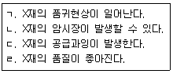
- ㄱ, ㄴ
- ㄴ, ㄷ
- ㄷ, ㄹ
- ㄱ, ㄴ, ㄷ, ㄹ
(정답률: 67%)
18. 스포츠산업 진흥법상 프로스포츠의 육성에 대한 설명으로 틀린 것은?
- 국가 및 지방자치단체는 스포츠산업의 발전을 도모하고, 국민의 건전한 여가활동을 진작하기 위하여 프로스포츠 육성에 필요한 시책을 강구할 수 있다.
- 지방자치단체는 프로스포츠 육성을 위하여 프로스포츠단 창단에 출자 또는 출연할 수 있다.
- 지방자치단체는 「공유재산 및 물품 관리법」에도 불구하고 공유재산을 25년 이내의 기간을 정하여 사용ㆍ수익을 허가하거나 관리를 위탁할 수 있다.
- 공유재산을 사용ㆍ수익 허가를 받은 프로스포츠단은 「공유재산 및 물품관리법」에 따라 사용ㆍ수익의 내용 및 조건에 위반되지 아니하는 범위라도 다른 자에게 사용ㆍ수익하게 할 수 없다.
(정답률: 68%)
19. 한국표준산업분류(제10차 개정)에서 ‘스포츠 서비스업(911)’에 해당하지 않는 것은?
- 경기장 운영업
- 체력단련시설 운영업
- 골프연습장 운영업
- 유원지 및 테마파크 운영업
(정답률: 73%)
20. 스포츠산업 진흥법령상 문화체육관광부장관이 국내 스포츠산업의 경쟁력 강화와 스포츠산업관련 상품의 해외시장 진출을 활성화하기 위한 지원사업을 대행하게 할 수 있는 기관 또는 단체가 아닌 것은?
- 「국민체육진흥법」에 따른 올림픽 기념국민체육진흥공단(국민체육진흥공단)
- 「한국산업인력공단법」에 따른 한국산업인력공단
- 「대한무역투자진흥공사법」에 따른 대한무역투자진흥공사
- 「스포츠산업 진흥법」에 따른 사업자단체
(정답률: 57%)
21. 소비자행동론의 입장에서 동기갈등의 유형인 접근-회피 갈등에 해당하는 스포츠팬의 시간투자 예로 가장 적합한 것은?
- 열성 축구 및 야구 팬의 축구관람과 야구관람
- 학생신분 축구 팬의 대표팀 경기관람과 기말고사 시험 준비
- 야구 팬의 류현진 등판경기 관람과 한국시리즈 관람
- 학생신분 스포츠 팬의 기말고사 시험준비와 과제제출
(정답률: 72%)
22. 스포츠산업 진흥법령상 지방자치단체가 프로스포츠 사업추진에 지원할 수 있는 경비의 범위로 틀린 것은?
- 프로스포츠단의 인건비를 제외한 운영비
- 프로스포츠단의 부대시설 구축을 위한 비용
- 각종 국내ㆍ국제 운동경기대회의 개최비와 참가비
- 유소년 클럽 및 스포츠교실의 운영비
(정답률: 44%)
23. 경기장사업의 가치사슬에 대한 설명과 가장 거리가 먼 것은?
- 관람객 및 초대 손님의 수가 경기장광고 가격을 결정한다.
- 경기장 소유주와 총괄관리사업주는 분리될 수도 있고 동일할 수도 있다.
- 매점사업자가 사업권의 구매가격을 결정할 때 가장 중요시하는 요인은 광고주 및 기업고객이다.
- 경기장의 장기 입주자인 프로구단의 명성은 경기장사업의 가치를 결정하는 요인이 될 수 있다.
(정답률: 69%)
24. 스포츠산업의 일반적인 특성과 가장 거리가 먼 것은?
- 한국표준산업분류의 관점에서 보면 스포츠산업을 각기 다른 산업분류를 복합적으로 통합한 형태를 갖는다.
- 스포츠산업 분야의 여러 가지 서비스는 입지조건이나 시설에 대한 의존도가 높다.
- 관람스포츠와 참여스포츠가 활성화되는 것을 체육 및 스포츠활동에 참여하는 연령대가 높아진 것이 가장 큰 원인이다.
- 스포츠산업이 다른 산업과 비교해서 가장 다른 특성은 감동과 건강을 준다는 점이다.
(정답률: 74%)
25. 스포츠산업 진흥법령상 문화체육부장관이 선수 권익보호와 스포츠 산업의 건전한 발전을위해 강구하여야 하는 시책에 해당하지 않는 것은?
- 승부 조작, 폭력 및 도핑 등의 예방
- 선수의 부상 예방과 은퇴 후 진로 지원
- 선수의 경력관리를 위한 관리시스템의 구축
- 선수의 권익 향상을 위한 대리인제도의 점진적 철폐
(정답률: 76%)
2과목: 스포츠 경영론
26. 직접금융에 의한 자본조달에 해당하지 않는 것은?
- 주식발행
- 채권발행
- 스폰서십 유치
- 은행차입
(정답률: 54%)
27. 스포츠조직을 활성화시키기 위한 동기부여의 과정이론에 해당되는 것은?
- Herzberg의 2요인이론
- Vroom의 기대이론
- Maslow의 욕구단계이론
- McGreger의 XㆍY이론
(정답률: 44%)
28. 스포츠 시설의 매력성 관리에 대한 설명과 가장 거리가 먼 것은?
- 스포츠 시설은 이용하는 데 불편함이 없도록 관리되어야 한다.
- 스포츠 시설은 적정 수준 이상의 많은 사람이 이용하도록 관리해야 한다.
- 스포츠 시설은 보기 좋고 아름답게 관리되어야 한다.
- 스포츠 시설은 접근이 용이하도록 관리되어야 한다.
(정답률: 55%)
29. 매년 말 200만원을 영원히 지급받는 영구연금의 현재가치는? (단, 연간이자율은 10%)
- 1,400만원
- 1,600만원
- 1,800만원
- 2,000만원
(정답률: 46%)
30. 최고경영자층의 의사결정을 지원하기 위한 목적으로 개발된 경영정보시스템은?
- EDI
- POS
- EIS
- TPS
(정답률: 52%)
31. 야구공을 생산하는 회사의 다음 자료를 이용하여 최근 4개월 자료로 가중이동평균법을 적용할 때, 5월의 예측생산량은? (단, 가중치는 0.5, 0.3, 0.2를 적용한다.)
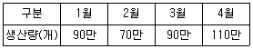
- 87만개
- 90만개
- 93만개
- 96만개
(정답률: 34%)
32. 포터(M.Porter)의 가치사슬모델에서 주요활동에 해당하지 않는 것은?
- 운영ㆍ제조
- 입고ㆍ출고
- 고객서비스
- 인적자원관리
(정답률: 42%)
33. 동일한 목표를 달성하고 새로운 가치창출을 위해 공급업체들과 자원 및 정보를 협력하여 하나의 기업처럼 움직이는 생산시스템은?
- 공급사슬관리(SCM)
- 적시생산시스템(JIT)
- 자재소요계획(MRP)
- 컴퓨터통합생산(CIM)
(정답률: 55%)
34. 목표관리(MBO:Management By Objectives)에 대한 설명으로 틀린 것은?
- 단기목표를 강조하는 경향이 있다.
- 결과에 의한 평가가 이루어진다.
- 사기와 같은 직무의 무형적인 측면을 중시한다.
- 종업원들이 역량에 비해 더 쉬운 목표를 설정하려는 경향이 있다.
(정답률: 37%)
35. 스포츠조직의 유형 중 전문적 관료제 구조와 비교한 기계적 관료제 구조의 특징과 가장 거리가 먼 것은?
- 비고정적 공유가능한 업무
- 중앙집권적 의사결정구조
- 공식적 상하간 의사소통
- 많은 규칙과 규정
(정답률: 46%)
36. 페이욜(Fayol)이 주장한 경영활동과 관련하여 연결이 옳은 것은?
- 기술활동-생산, 제조, 가공
- 상업활동-계획, 조직, 지휘, 조정, 통제
- 회계활동-구매, 판매, 교환
- 관리활동-재화 및 종업원 보호
(정답률: 45%)
37. 내부수익률법에 관한 설명으로 옳은 것은?
- 내부수익률은 순현재가치를 0으로 만드는 할인율이다.
- 내부수익률이 1보다 크면 투자안을 채택하고, 1보다 작으면 기각한다.
- 투자안의 현재가치를 초기투자비용으로 나누어 구한다.
- 상호배타적인 투자 안을 쉽게 분별할 수 있게 한다.
(정답률: 36%)
38. 투자안의 경제성 평가에 이용되는 지표 중 현금유입의 현재가치에서 현금유출의 현재가치를 차감한 것은?
- 내부수익률
- 순현재가치
- 회수기간
- 수익성지수
(정답률: 54%)
39. 미국 프로농구에서 각 팀들이 자기 팀의 베테랑 선수들과 재계약할 경우, 셀러리캡을 초과할 수 있도록 한 조치는?
- Larry Bird exception
- Farm system
- Free agent
- Draft system
(정답률: 58%)
40. 제품-시장 매트릭스에서 기존제품을 가지고 기존시장에서 성장을 도모하는 것으로 경쟁업자의 시장점유율을 빼앗아 성장하고자 하는 전략은?
- 시장침투전략
- 다각화전략
- 집중화전략
- 시장개발전략
(정답률: 62%)
41. 스포츠기업의 형태 중 단일사업기업의 특징과 가장 거리가 먼 것은?
- 낮은 기회비용
- 경쟁우위의 축척
- 자원과 에너지의 집중
- 산업성장 둔화시 높은 위험
(정답률: 39%)
42. 스포츠이벤트 기획 후 실행단계에서 이벤트 연출 시 고려사항을 모두 고른 것은?
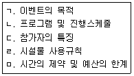
- ㄱ, ㄴ, ㅁ
- ㄴ, ㄷ, ㄹ
- ㄱ, ㄷ, ㄹ, ㅁ
- ㄱ, ㄴ, ㄷ, ㄹ, ㅁ
(정답률: 63%)
43. 다음 수요예측기법 중 시계열분석기법과 가장 거리가 먼 것은?
- 이동평균법
- 지수평활법
- 추세분석법
- 선도지표법
(정답률: 38%)
44. 제무비율에 관한 설명으로 틀린 것은?
- 유동성 비율은 단기에 지급해야할 기업의 채무를 갚을 수 있는 기업의 능력을 측정하는 것이다.
- 수익성 비율이란 기업이 경영활동을 하면서 어느 정도의 수익을 발생시키는지를 나타내는 지표이다.
- 부채비율은 기업이 조달한 자본 중에서 자기자본에 의존하고 있는 정도를 나타내는 지표로 자본생산성 등이 해당한다.
- 활동성 비율은 기업의 자산이 효율적으로 관리되고 있는 정도를 나타내는 지표로서, 주로 기업의 자산회전율에 의해 측정된다.
(정답률: 50%)
45. 인사고과의 방법 중 상대평가 기법과 가장 거리가 먼 것은?
- 단순서열법(simple ranking method)
- 쌍대비교법(paired comparison method)
- 강제할당법(forced distribution method)
- 평정척도법(rating scale method)
(정답률: 35%)
46. 다음 ()에 알맞은 스포츠 경영환경은?
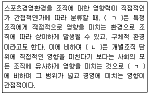
- ㄱ:일반환경, ㄴ:내부환경
- ㄱ:일반환경, ㄴ:과업환경
- ㄱ:과업환경, ㄴ:일반환경
- ㄱ:과업환경, ㄴ:내부환경
(정답률: 61%)
47. 다음 중 스포츠조직의 조직역량강화를 위해 제공자가 전달하고자 한 정보를 수신자가 어떻게 받아 들였는지를 알려주는 반응으로 정확한 메시지가 전달되었는지 확인할 수 있는 커뮤니케이션의 구성요소는?
- 메시지화
- 커뮤니케이션 경로선택
- 메시지 해석
- 피드백
(정답률: 65%)
48. 다음 재무구조를 가진 스포츠센터의 자기자본순이익률(ROE)은 약 얼마인가?
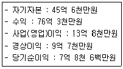
- 9%
- 14%
- 17%
- 21%
(정답률: 48%)
49. 경영자의 역할을 대인적ㆍ정보적ㆍ의사결정적 역할로 설명한 학자는?
- 쿤츠(H.Koontz)
- 민츠버그(H.Mintzberg)
- 드러커(P.F.Drucker)
- 페이욜(H.Fayol)
(정답률: 57%)
50. 다음 중 리더십 이론에 관한 설명으로 옳은 것은?
- 특성이론(trait theory)에 의하면, 리더는 리더십 행사에서 상황의 영향을 받을 수 있음을 제시한다.
- 관리격자(managerial grid) 이론에 의하면, 중간관리자에게 가장 적절한 리더십 유형은 중간형(5.5)이다.
- 피들러(Firdler)의 상황이론에서는 리더십의 상황요인으로 리더-구성원 관계, 과업구조, 리더의 직위권한을 제시하고 있다.
- 경로-목표 이론(path-goal theory)에서는 의사결정상황에 따라 리더의 의사결정유형을 달리하는 의사결정나무(decision tree)를 지사하고 있다.
(정답률: 47%)
3과목: 스포츠 마케팅론
51. 다음 A구단이 25만개의 입장권을 모두 판매했을 때, 손익분기점에 다다르기 위한 입장권의 최소가격과 그에 따른 입장권당 이익으로 옳은 것은?
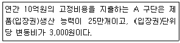
- 제품가격 5,500원, 개당이익 2,500원
- 제품가격 6,000원, 개당이익 3,000원
- 제품가격 7,000원, 개당이익 4,000원
- 제품가격 10,500원, 개당이익 7,500원
(정답률: 50%)
52. 스포츠제품의 특성 중 소멸성을 해소하기 위한 방안과 가장 거리가 먼 것은?
- 예약제도의 도입
- 시간대별 수요를 토대로 가격책정
- 시즌티켓의 판매
- 셀프서비스의 도입
(정답률: 57%)
53. 다음 중 스포츠마케팅조사에서 전화조사방법이 가장 적합한 경우는?(오류 신고가 접수된 문제입니다. 반드시 정답과 해설을 확인하시기 바랍니다.)
- 자세하고 심층적인 정보를 얻기 위한 조사
- 어떤 시점에 순간적으로 무엇을 하며, 무슨 생각을 하는가를 알아내기 위한 조사
- 비교적 저렴한 가격으로 면접자 편의를 줄일 수 있으며 대답하는 요령도 동시에 자세히 알려줄 수 있는 조사
- 넓은 범위의 지리적인 영역을 조사대상지역으로 하여 비교적 복잡한 정보를 얻으면서, 경비를 절약할 수 있는 조사
(정답률: 29%)
54. 스포츠기업에서 활용하는 관계마케팅의 특징과 가장 거리가 먼 것은?
- 신규고객의 유치를 강조한다.
- 고객과의 신뢰형성을 강조한다.
- 장기적인 마케팅 성과를 지향한다.
- 고객과의 지속적인 거래관계를 유지하고자 한다.
(정답률: 62%)
55. 목표시장 선정에서 비차별화 전력의 장점에 해당하는 것은?
- 규모의 경제를 실현함으로써 마케팅 비용절감의 효과를 얻을 수 있다.
- 스포츠 소비자의 필요와 요구에 따라 상품과 서비스를 다양한 가격과 형태로 제공하여 많은 소비자를 확보할 수 있다.
- 특정시장의 욕구와 필요를 경쟁자보다 잘 알 수 있다.
- 소비자 충성도를 높일 수 있다.
(정답률: 39%)
56. 2차 자료 분석에 관한 옳은 설명을 모두 고른 것은?
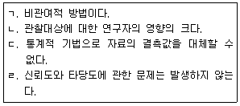
- ㄱ
- ㄱ, ㄴ
- ㄴ, ㄷ, ㄹ
- ㄷ, ㄹ
(정답률: 38%)
57. 기업이 선수보증광고 실행을 위한 선수선정기준을 모두 고른 것은?
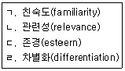
- ㄱ, ㄴ. ㄷ, ㄹ
- ㄱ, ㄴ, ㄷ
- ㄴ, ㄷ, ㄹ
- ㄱ, ㄹ
(정답률: 57%)
58. 기업의 스포츠 스폰서십 참여기준을 스포츠 이벤트 자체의 가치 관련 기준과 기업 내부 기준으로 구분할 때 기업 내부 기준에 해당하는 것은?
- 매체노출 효과
- 계절성
- 대중의 선호도
- 스폰서십 참여 비용
(정답률: 56%)
59. 소비자가 상품 구입에 있어서 인식하는 리스크 중 상품이 조잡하거나 기대에 미치지 못하는 기능에 대한 것은?
- 신체적 인지 리스크
- 사회적 인지 리스크
- 기능적 인지 리스크
- 경제적 인지 리스크
(정답률: 66%)
60. 스포츠 브랜드 개발의 목표 설정 시 고려해야 하는 사항과 가장 거리가 먼 것은?
- 가용자원
- 마케팅 요구조건
- 캐릭터 개발
- 세분시장의 성격
(정답률: 58%)
61. 스포츠 제품 분류에 관한 설명으로 틀린 것은?
- Brooks의 분류에 따르면 유형의 제품, 스포츠 프로그램, 아이디어 혹은 기술 그리고 스포츠 경기로 나눠진다.
- shank의 분류에 따르면 스포츠 이벤트, 스포츠 상품, 스포츠 스타, 스포츠 산업으로 나눠진다.
- 형태에 의한 분류는 무형의 제품과 유형의 제품으로 나눠진다.
- 소비자의 행동에 따른 분류는 관람스포츠제품과 참여스포츠제품으로 나눠진다.
(정답률: 51%)
62. 촉진전략 모델(AIDA)의 단계적 순서를 바르게 나열한 것은?
- 흥미→욕구→행동→주의
- 욕구→행동→주의→흥미
- 행동→흥미→욕구→주의
- 주의→흥미→욕구→행동
(정답률: 51%)
63. 스포츠제품의 상대적인 저가 가격전략이 적합한 경우가 아닌 것은?
- 시장수요의 가격탄력성이 높을 때
- 원가우위를 확보하고 있어 경쟁기업이 자사 가격만큼 낮추기 힘들 때
- 시장에 경쟁자의 수가 많을 것으로 예상될 때
- 높은 품질로 새로운 소비자층을 유인하고자 할 때
(정답률: 57%)
64. 광고매체 유형별 특성에 관한 설명으로 틀린 것은?
- TV :노출시간이 짧다.
- 라디오:청각에 의존한다.
- 옥외광고:광고대상 집단 선별성이 높다.
- 회전식 A보드 광고:위치에 따른 노출편차를 줄일 수 있다.
(정답률: 48%)
65. 일반인들에게 많이 알려져 있지 않은 지역의 스포츠 이벤트를 홍보하는데 있어 관여도(involement)가 높은 집단에 적용할 수 있는 가장 적합한 촉진전략은?
- 가능한 한 간단한 정보만을 공중파 방송을 통해 제공한다.
- 가능한 한 간단한 정보만을 잡지를 통해 제공한다.
- 가능한 한 간단한 정보만을 일간지를 통해 제공한다.
- 가능한 한 구체적인 정보를 표적으로 하는 집단이 선호하는 매체를 통해 제공한다.
(정답률: 56%)
66. 기업 관점에서 스포츠단체와 라이센싱을 계약할 때 포함해야 하는 핵심조항과 가장 거리가 먼 것은?
- 지역의 범위와 제품 독점성
- 연간 매출액을 포함한 재무구조
- 양도 가능성과 하위 라이센싱 권리
- 라이센서의 재산권에 대한 표시와 보증
(정답률: 49%)
67. 환경분석에 사용되는 SWOT분석 요인을 바르게 짝지은 것은?
- 내부환경:S-T
- 외부환경:S-W
- 내부환경:W-O
- 외부환경:O-T
(정답률: 48%)
68. 상표전략에 대한 설명으로 틀린 것은?
- 소형유통기관일수록 제조업자 상표보다 유통업자 상표를 사용하는 것이 유리하다.
- 개별상표전략을 각 제품에 대한 시장의 규모가 클수록 더 적합하다.
- 복수상표전략은 경쟁사의 시장진입을 방해하는 방법으로 사용될 수 있다.
- 상표확장전략은 소비자가 인지하는 상품간에 관련성이 높을 때 쓰는 전략이다.
(정답률: 40%)
69. 스포츠마케팅 관점에서 프로야구경기 중 치어리더 공연을 기획하는 이유와 가장 거리가 먼 것은?
- 팬들에게 비용(입장료)이상의 체험 제공
- 경기의 프로모션 수단으로 활용
- 핵심제품의 질 향상
- 마케팅 믹스의 일환으로 실행
(정답률: 52%)
70. 경기장 광고 중 보드광고에 대한 설명으로 틀린 것은?
- 방송중계시 높은 노출을 기대하는 보드광고주에게 광고판의 크기와 위치는 무엇보다 중요하다.
- 보드광고 노출율의 구역별 차이를 강화하여 높은 광고 수익을 얻기 위해 회전식 보드나 전자보드 사용을 확대한다.
- TV광고에 비해 보드광고는 소비자의 광고기피현상을 방지할 수 있다.
- 일반적으로 스포츠이벤트에 따라 보드광고에 필요한 보드의 재질 및 크기, 설치위치 등을 규정한다.
(정답률: 40%)
71. 기업의 스폰서십 참여를 스포츠단체와의 관련성에 따라 직접참여와 간접참여 형태로 구분할 때 직접참여형태와 가장 거리가 먼 것은?
- 스포츠이벤트 스폰서십
- 라이센싱/머천다이징
- 스포츠단체 스폰서십
- 스포츠방송 스폰서십
(정답률: 41%)
72. 스포츠를 이용한 마케팅(marketing through sports)에 관한 설명으로 틀린 것은?
- 스포츠를 이용한 마케팅은 관람스포츠 분야와 참여스포츠분야 모두 가능하다.
- 스포츠를 이용한 마케팅은 스포츠 가치를 극대화하기 위한 가업의 마케팅 노력이다.
- 스포츠를 이용한 마케팅의 주체는 스포츠 권리를 가지고 있는 스포츠주관자와 스폰서의 두 주체이다.
- 스포츠를 이용한 마케팅은 기업 측면에서 스폰서십이라고도 할 수 있다.
(정답률: 43%)
73. 자기기입식 설문조사와 비교할 때 면접 설문조사의 장점으로 옳은 것은?
- 자료입력이 편리하다.
- 응답의 결측치를 최소화한다.
- 조사대상 1인당 비용이 저렴하다.
- 폐쇄형 질문에 유리하다.
(정답률: 44%)
74. 울산광역시에 거주하고 있는 스포츠소비자를 대상으로 A제품에 대한 고객만족도를 조사하고자 한다. 다음 중 동일한 규모의 표본을 추출할 때 대표성은 높으나 시간과 비용이 가장 많이 드는 표집2방법은?
- 판단표본추출
- 편의표본추출
- 단순무작위표본추출
- 할당표본추출
(정답률: 28%)
75. 제품수명주기(PLC)에 대한 설명으로 가장 적합한 것은?
- 제품개발에서부터 소비자에게 전달될 때까지의 기간을 말한다.
- 신제품이 시장에 도입되어 쇠퇴할 때까지의 기간을 말한다.
- 제품개발에서부터 고객의 욕구가 충족될 때까지의 기간을 말한다.
- 제품이 시장에 도입되어 소비자가 제품으로부터 효용을 얻게 될 때까지를 말한다.
(정답률: 50%)
4과목: 스포츠 시설론
76. S대학교 인근에는 A트레이닝센터, B헬스, C피스니스 등 다양한 스포츠센터가 있으며 모두 유사한 시설과 개인 트레이너들을 보유하고 있다. 이러한 상황에서 각 스포츠센터가 고랴해야 할 가격결정방법으로 가장 적합한 것은?
- 수요를 토대로 한 가격결정
- 수익을 토대로 한 가격결정
- 경쟁을 토대로 한 가격결정
- 비용을 토대로 한 가격결정
(정답률: 55%)
77. 다음 중 등록 체육시설업이 아닌 것은?
- 스키장업
- 골프장업
- 자동차 경주장업
- 체력단련장업
(정답률: 55%)
78. 체육시설의 부지 면적의 제한사항에 대한 설명으로 틀린 것은?
- 문화체육광광부장관은 체육시설업의 건전한 육성을 위해 필요하다고 인정하면 체육시설의 이용 및 운영에 지장이 없는 범위에서 부지 면적을 제한할 수 있다.
- 자동차경주장의 부지면적은 트랙면적과 안전지대면적을 합한 면적의 6배를 초과할 수 없다.
- 썰매장의 부지면적은 슬로프면적의 3배를 초과할 수 없다.
- 실내골프연습장의 부지면적은 타석면적과 보호망을 설치한 토지면적을 합한 면적의 2배의 면적을 초과할 수 없다.
(정답률: 36%)
79. 다음 ()에 알맞은 운영방식은?
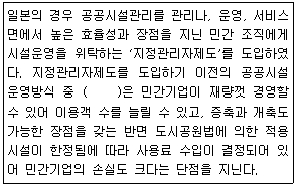
- 위탁정액방식
- 위탁수입방식
- 관리허가방식
- 건설위탁방식
(정답률: 39%)
80. 다음 ()에 알맞은 것은?
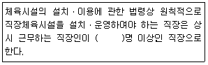
- 100
- 200
- 300
- 500
(정답률: 49%)
81. 다음 설명에 해당하는 것은?
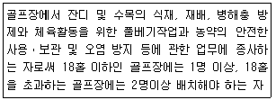
- 안전관리요원
- 경기진행요원
- 코스관리요원
- 위생관리요원
(정답률: 44%)
82. 스포츠시설 관리 운영에 있어 지켜야 할 원칙과 거리가 먼 것은?
- 우수한 시설관리자의 확보
- 시설의 투자 확대
- 각 담당자간의 긴밀한 협조체계 구축
- 시설관리기술에 대한 지속적인 능력 배양 및 투자
(정답률: 47%)
83. 새로운 스포츠의 개발 및 보급을 위해 고려해야 할 사항과 가장 거리가 먼 것은?
- 프로모션 수단의 다각화 가능성
- 쉽고 간단한 장비로 증길 수 있는 프로그램
- 비용절감을 위한 운영자 중심의 규칙
- 참가대상이나 지역특성에 맞는 규칙
(정답률: 63%)
84. 경기장 광고에 대한 설명으로 틀린 것은?
- 경기장 광고의 주요노출대상은 경기장의 관중과 중계 시 노출될 TV 시청자들이다.
- 경기장 광고는 관중들보다 시청자들에게 노출효과가 큰 것으로 보고되고 있다.
- 경기장 광고는 방송 광고에 비해 상대적으로 가격이 저렴하고 표현방식이 다양하다.
- 광고주 입장에서는 실정에 맞게 경기장 광고와 방송 광고를 적절히 활용할 수 있어야 한다.
(정답률: 40%)
85. 경기장 매점에서 창출할 수 있는 수입의 규모 요인과 가장 거리가 먼 것은?
- 관중 수
- 구장의 크기
- 초기투자 규모
- 이벤트의 유형
(정답률: 35%)
86. 체육시설업의 종류에 대한 설명으로 틀린 것은?
- 빙상장업:제빙시설을 갖춘 빙상장을 경영하는 업
- 무도학원업:입장료 등을 받고 국제표준무도(볼륨댄스)를 할 수 있는 장소로 제공하는 업
- 스키장업:눈, 잔디, 그 밖에 천연 또는 인공재료로 된 슬로프를 갖춘 스키장을 경영하는 업
- 종합 체육시설업:신고 체육시설업의 시설 중 실내수영장을 포함한 두 종류 이상의 체육시설을 같은 사람이 한 장소에 설치하여 하나의 단위 체육시설로 경영하는 업
(정답률: 52%)
87. 체육시설의 설치ㆍ운영과 관련되거나 체육시설 안에서 발생한 피해를 보상하기 위해 손해보험에 반드시 가입해야 하는 자는?
- 체육도장업을 설치ㆍ경영하는 자
- 승마장업을 설치ㆍ경영하는 자
- 골프연습장업을 설치ㆍ경영하는 자
- 당구장업을 설치ㆍ경영하는 자
(정답률: 51%)
88. 농어촌형 스포츠시설 관련 특성과 가장 거리가 먼 것은?
- 시장이 좁기 때문에 상대적으로 경쟁이 약하다.
- 인구유출로 인한 고객 확보의 어려움이 있다.
- 여가시간이 많이 때문에 스포츠활동의 호응도가 높다.
- 소득이 낮고 노동시간이 길어 고객유치가 어렵다.
(정답률: 60%)
89. 체육시설의 설치ㆍ이용에 관한 법령상 다음 설명에 해당하는 안전점검의 기준은?
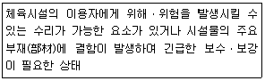
- 양호
- 수리 필요
- 이용제한 필요
- 사용중지 필요
(정답률: 44%)
90. 스포츠시설을 홍보하기 위한 이벤트 개최목적과 가장 거리가 먼 것은?
- 기금마련
- 제품개발
- 고객환대
- 미디어의 시선집중
(정답률: 47%)
91. 스포츠시설을 활용한 이벤트 개발에서, 오랜 전통을 가진 기업이 창립 이후 세월이 경과함에 따라 시장 환경의 변화에 대응하기 위해서 자사의 이미지 제고 및 변신을 시도하는 경우 어느 활동에 중점을 두어야 하는가?
- PR(Public Relation)활동
- SP(Sales Promotion)활동
- 내부 프로모션(Inter Promotion)활동
- 광고(Advertising)활동
(정답률: 56%)
92. 체육시설의 설치ㆍ이용에 관한 법령상 체육도장업의 영업범위에 해당하는 운동종목이 아닌 것은?
- 대한체육회 가맹 경기단체에서 행하는 운동으로서 권투
- 대한체육회 가맹 경기단체에서 행하는 운동으로서 우슈
- 대한체육회 가맹 경기단체에서 행하는 운동으로서 레슬링
- 대한체육회 가맹 경기단체에서 행하는 운동으로서 무에타이
(정답률: 40%)
93. 경기장 입장권 판매 및 프로모션에 대한 설명과 가장 거리가 먼 것은?
- PSL이란 일정기간동안 지정좌석을 제공하는 형태의 특별 입장권을 말한다.
- 유통대행사를 활용하면 판매 소요비용이 경감되며, 입장료 원가 상승을 막을 수 있다.
- 유통대행사를 통한 입장권 판매시 관련 구단의 통제력이 약화될 가능성이 있다.
- 입장권 프로모션의 유형에는 가격할인, 경품제공, 콘테스트, 쿠폰제공 등이 있다.
(정답률: 46%)
94. 체육시설의 설치ㆍ이용에 관한 법령상 체육시설 안전관리 초상의 구분으로 옳은 것은?
- 공공체육시설/체육시설업 부문
- 전문체육시설/등록 체육시설업 부문
- 직장체육시설/신고 체육시설업 부문
- 생활체육시설/참여 체육시설업 부문
(정답률: 39%)
95. 관람스포츠시설과 참여스포츠시설의 특성에 관한 설명으로 틀린 것은?
- 참여 스포츠시설은 고객 유인에 있어 시설이 미치는 영향이 크다.
- 관람 스포츠시설은 고객의 서비스 관여정도가 상대적으로 크다.
- 참여 스포츠시설은 고객과의 대면이 많아 고객응대 방식이 중요하다.
- 관람 스포츠시설은 다양한 부대서비스 제공을 통해 고객만족을 추구한다.
(정답률: 51%)
96. 공공스포츠시설을 관리운영할 때 경영 관리 측면에서 주안점을 두어야 할 사항과 가장 거리가 먼 것은?
- 민간 위탁관리의 적합성 검토
- 다양한 욕구를 충족하는 공간 구축
- 정기적 경영진단과 평가
- 지속적 홍보 방안 강구
(정답률: 40%)
97. 수영장업의 안전ㆍ위생 기준 중 수영조욕수의 수질기준으로 틀린 것은?
- 대장균군은 10밀리리터들이 시험대상 욕수 5개 중 양성이 3개 이하이어야 한다.
- 탁도는 1.5NTU 이하이어야 한다.
- 유리잔류염소는 0.4mg/l부터 1.0mg/1까지의 범위 내이어야 한다.
- 수소이온농도는 5.8부터 8.6까지 되도록 하여야 한다.
(정답률: 40%)
98. 스포츠센터의 시설 설계디자인 시 고려하여야 하는 요인과 가장 거리가 먼 것은?
- 센터의 오픈 및 마감 시간
- 이용자들이 편리하게 움직일 수 있는 동선
- 신체장애인, 어린이, 노약자를 고려한 동선 및 이용시설
- 방음 설계 및 음향 시스템
(정답률: 64%)
99. 체육시설의 설치ㆍ이용에 관한 법령상 4륜 자동차경주장업의 운동시설 기준으로 틀린 것은?
- 트랙은 길이 2킬로미터 이상으로서 출발지점과 도착지점이 연결되는 순환형태여야 한다.
- 트랙의 바닥면은 포장 또는 비포장이어야 한다.
- 트랙의 종단 기울기(차량진행방향으로서의 경사를 말한다)는 오르막 20% 이하, 내리막 10% 이하여야 한다.
- 트랙의 양편 가장자리는 폭 15센티미터의 노랑색선으로 표시하여야 한다.
(정답률: 44%)
100. 고객관리에 대한 설명으로 틀린 것은?
- 고객의 다양한 욕구를 파악해서 경영에 반영시키는 것이 고객관리이다.
- 고객관계관리 개념에서는 개별마케팅보다 유기적 관계의 관점이 중요하다.
- ‘기존고객의 유지-신규고객 유치-고객만족 서비스 강화’로 고객관리를 발전시킨다.
- 고객관계관리 관점에서는 신규고객을 만족시키는 것이 기존고객을 만족시키는 것보다 효율적이다.
(정답률: 61%)